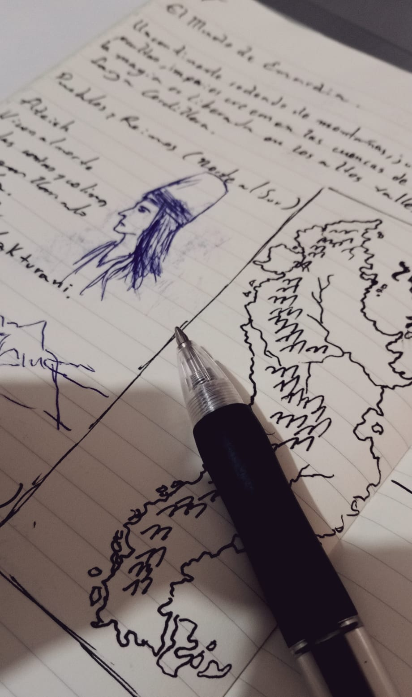

About me
Hi, Hi, I'm Elías from Guayaquil, Ecuador. I'm currently studying Software Development through BYU-Pathway. I served in the Colombia Bogotá South Mission from 2021 to 2024. I enjoy learning about technology, and I also have a deep interest in physics and movies. I've been practicing karate since I was six years old.
My Interests
When I'm not studying, I get lost in the things I love—more than just hobbies, they feel like a part of who I am. I play the zampoña, an Andean flute, and I continue to train in karate—I'm now a black belt. I also enjoy creating fantasy worlds, inspired by stories like The Lord of the Rings, Game of Thrones, and the mythologies of Ancient America and Pre-Columbian Cultures.